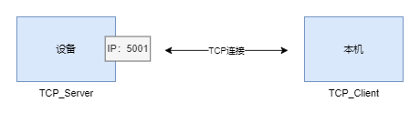
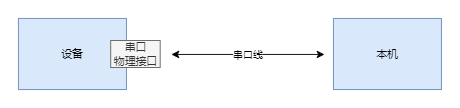
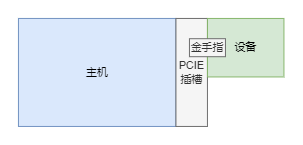
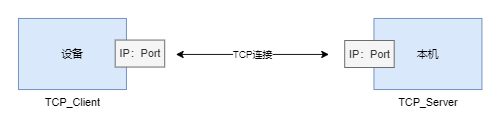

- 待办事项:
- 协议类详解待完善，具体说明各个协议的通信过程
网络指令
在本工具中，网络指令是指使用TCP/IP通信协议，来实现主机与设备相互通信发送数据的一种方法
 设备作为Server端其5001端口常开用于接收指令，本机使用设备IP:5001连接并进行指令收发。
网络指令代码示例
from nsukit import *
nsukit = NSUKit(TCPCmdUItf, TCPStreamUItf)
nsukit.link_cmd(target="x.x.x.x", port=5001)
nsukit.write(0x1, b'\x02\x00\x00\x00')
nsukit.read(0x1)
nsukit.bulk_write({0x1: b'\x02\x00\x00\x00', 0x2: b'\x03\x00\x00\x00'})
nsukit.bulk_read([0x1, 0x2])
串口指令
在本工具中，串口指令是指使用串口线将主机与设备连接，来实现主机与设备相互通信发送数据的一种方法
 主机与设备使用串口线互联后，根据串口号连接并进行指令收发。
串口指令代码示例
from nsukit import *
nsukit = NSUKit(SerialCmdUItf, TCPStreamUItf)
nsukit.link_cmd(target="COM1", target_baud_rate=9600)
nsukit.write(0x1, b'\x02\x00\x00\x00')
nsukit.read(0x1)
nsukit.bulk_write({0x1: b'\x02\x00\x00\x00', 0x2: b'\x03\x00\x00\x00'})
nsukit.bulk_read([0x1, 0x2])
PCI-E指令
在本工具中，PCI-E指令是指使用PCI-E总线将主机与设备连接，来实现主机与设备相互通信发送数据的一种方法
 将设备插入主机后，根据设备号（0到本机所有插入的设备数量-1）连接并进行指令收发。
PCI-E指令代码示例
from nsukit import *
nsukit = NSUKit(PCIECmdUItf, PCIEStreamUItf)
nsukit.link_cmd(target=0, cmd_sent_base=0x10000000, cmd_recv_base=0x13000000, irq_base=0x00003000 + 44, sent_down_base=0x00003030)
nsukit.write(0x1, b'\x02\x00\x00\x00')
nsukit.read(0x1)
nsukit.bulk_write({0x1: b'\x02\x00\x00\x00', 0x2: b'\x03\x00\x00\x00'})
nsukit.bulk_read([0x1, 0x2])
网络数据流
在本工具中，网络数据流是指使用TCP/IP通信协议，来实现主机与设备相互发送流式数据的一种方法
 端口号会根据设备的IP进行自动计算，用户自己指定端口
本机作为Server开放端口后，设备自动连接并进行数据传输。
网络数据流代码示例
from nsukit import *
import threading
event = threading.Event()
length = 1024
nsukit = NSUKit(TCPCmdUItf, TCPStreamUItf)
nsukit.link_stream(target="x.x.x.x")
fd = nsukit.alloc_buffer(length)
nsukit.stream_recv(99, fd, length, 0, event.is_set)
print(nsukit.get_buffer(fd, length))
PCI-E数据流
在本开发工具中，PCI-E数据流是指使用PCI-E总线将主机与设备连接，来实现主机与设备相互发送流式数据的一种方法
将设备插入主机后，根据设备号（0到本机所有插入的设备数量-1）连接并取出数据。
PCI-E数据流代码示例
from nsukit import *
import threading
event = threading.Event()
length = 1024
nsukit = NSUKit(PCIECmdUItf, PCIEStreamUItf)
nsukit.link_stream(target=0)
fd = nsukit.alloc_buffer(length)
nsukit.stream_recv(0, fd, length, 0, event.is_set)
print(nsukit.get_buffer(fd, length))
名词解释
targrt : 目标设备的地址。TCP/IP通信协议中为IP地址，PCI-E中为本机中的设备数量减1，串口为设备串口号
NSUKit : 统一调用工具类
TCPCmdUItf : 网络指令类
SerialCmdUItf : 串口指令类
PCIECmdUItf : PCI-E指令类
TCPChnlUItf : 网络数据流类
PCIEChnlUItf : PCI-E数据流类